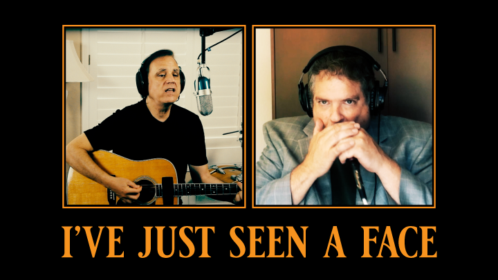

| HOME | MUSICIAN | SONG WRITER | PRODUCER |
| ALBUMS | CHRISTMAS SONGS | VIDEOS | COLLABORATIONS | BEHIND THE SCENES | DOWNLOAD | ★ JOIN EMAIL LIST ★ |
|

Behind The Scenes #3 In America during the early 1960s, there was an expectation that a band’s album would also include their current hit single. Hit singles were almost always sold as a 45 RPM record. So, if you bought the 45 and later bought the album, you would have two copies of the same song. This differed from the UK where albums usually did not duplicate songs released as singles. One implication of this was that Beatle albums in America had a different collection of songs than their UK counterparts. This difference was just a fact of life until 1967 with the release of Sgt Pepper’s Lonely Hearts Club Band -- from that release on all Beatle albums in the UK and America were the same. In America during the 1960s when I was building my collection of Beatle albums, I’ve Just Seen A Face was the first song on Rubber Soul. To this day, I still associate Beatle songs with the albums on which I first heard them. If you get any of the new reissued Beatle albums you’ll find I’ve Just Seen A Face on the Help! album. This difference is something that continues to frustrate me when I go to find Beatle songs on my computer. I have all the Beatle reissues in digital form. In this case, I went to Rubber Soul first, and... didn't find it. Then I remember about the reissues. Then I have to try to remember which reissue it was moved to. Sometimes I just have to search for it. Anyway, if you’re wondering why the Rubber Soul album can be seen in the studio chair in this video, now you know -- when I think of I’ve Just Seen A Face, I think: first song, side 1, Rubber Soul. One of the many things I thought was so unique about this song is that the bass guitar part is played on a 12 string acoustic guitar. At least, it sounds like a bass part to me, and there’s no bass on the Beatles' recording. But the cool thing is that If I didn’t mention this fact, most people probably wouldn’t even notice that a bass is missing. I thought about adding a real bass -- I know it would sound good -- but I’ve come to love the original arrangement so much that I wanted to stay true to it. Besides, James added a lot of clever harmonica parts to build up the song. Now this next bit has nothing to do with anything, it’s totally random. When I do a video like this with other artists and they send me their video clips, I never know what to expect. I’ve learned to be prepared for anything. For every clip you see in the video there are 3 or 4 that didn’t make it. James sent me a clip where he sang his harmony with Mr Potato Head in a pirate suit somehow standing on his shoulder. At one point he even put the mic in front of Mr Potato Head to sing a part. Why Mr Potato Head? Who knows? I still want to know how James managed to keep him on his shoulder. I don’t know what made me want to try this clip in the video, but I did. I’m always trying to make these videos different. I tried him in one of the choruses, then watched it, and... no negative vibe. Then I thought OK, in for a penny, in for a pound… what if I model Mr Potato Head in 3D and have him show up in a few spots in the video. A total non-sequitur. Maybe do some primitive animation where he’s tapping his toe to the beat. So I modeled him in 3D. I use a program called Cinema4d to do 3D animation. Mr Potato Head was pretty easy, he's a smooth, simple, plastic toy. The toe tapping animation is laughable. But I love playing with 3D software and making stuff like this. I made a short video clip of him tapping his foot and put it into a couple of the choruses. I watched the video from the beginning. When he appeared for the first time it caught me a little off-guard and I laughed to myself -- a good sign. When the end came and he just stood there I remember thinking he needs to wave goodbye to everyone. So I added another horrible animation of him waving and gained new-found respect for real 3D animators. Anyway, when I watched him waving goodbye at the end as the lake fades in, it seemed OK... as a placeholder. I figured I would leave him in for a while and replace him with something later. But he's a slippery character and somehow survived the editing process. On the other hand, he works for free and never gripes about his placement.
|